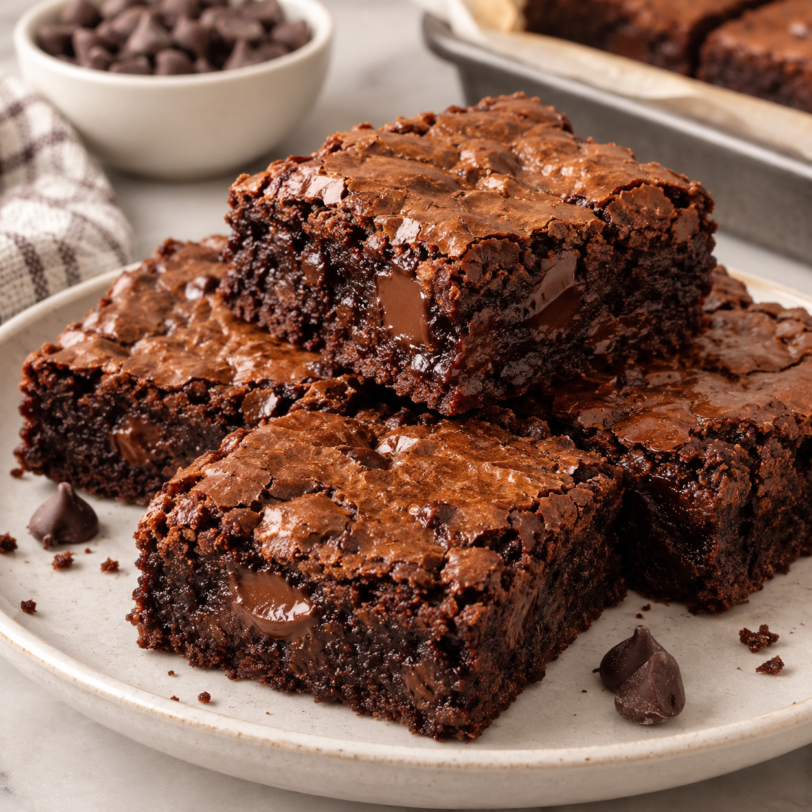

Fudgy Brownies
Warm, gooey, and made to melt your heart.
⏱ 30 min
Prep Time
⏱ 12 min
Cook Time
Easy
Difficulty
☆ 4.9
128 reviews
✨ Secrets to EXTRA fudgy brownies .Don't overbake! This is the biggest secret to a soft, fudgy center. .Don't add baking powder; this recipe is designed to be dense rather than cakey. .Use good-quality cocoa powder and chocolate. .For extra gooey chocolate pockets, sprinkle a few more chocolate chips on top before baking. .For clean slices, let the brownies cool completely before cutting.